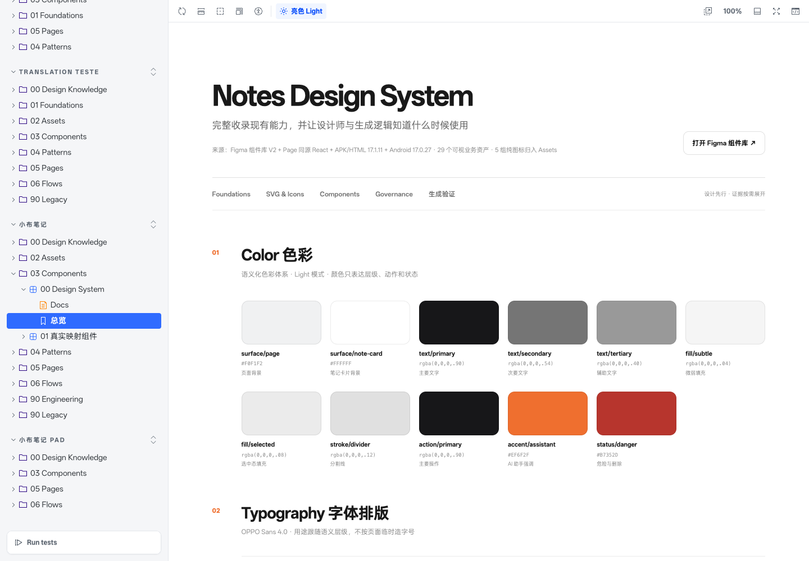
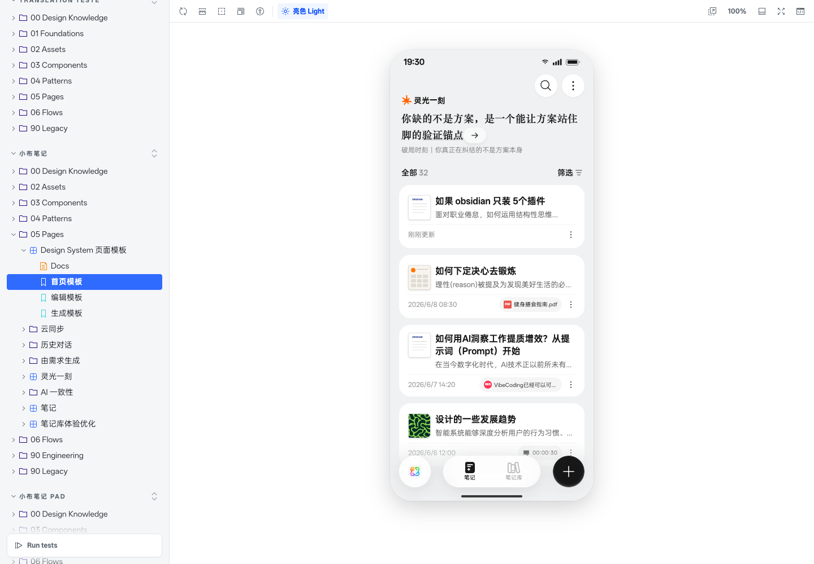

不用为每个项目
重新教 AI
GitLab 自带命令行和接口，AI 已经理解这套通用用法：找到项目、读取资料、提交修改，都有现成的路径。
GitLab 不只是放文件的地方。它给 AI 一套熟悉的入口，把资料、协作、自动执行和每次修改的来龙去脉放在一起，让 AI 更容易理解，也让人更容易检查。
GitLab 自带命令行和接口，AI 已经理解这套通用用法：找到项目、读取资料、提交修改，都有现成的路径。
知识库、页面、自动检查、机器人和执行环境可以接在一起，让 Agent 从“读懂”一路走到“完成并交付”。
项目仓库保存当前版本、修改记录和讨论依据。大家看同一份内容，AI 也从这里开始，不再反复寻找“到底哪份是真的”。
第一次完成登录、令牌和业务项目配置。之后每个任务都遵循同一条路径：从正式版本开新分支，修改并检查，通过合并请求确认后再合入。
按下面 1-4 步操作。下方图示也要跟着点击切换 Tab 查看，不同 Tab 对应不同页面位置。
Sign in，先完成公司账号认证。


业务仓库统一创建在 L3-AI-Native / Design System。负责人准备业务名称、自己的 GitLab 账号和已沉淀项目目录，然后依次复制下方两段提示词给 AI。
xiaobubiji-design-system。L3-AI-Native / Design System，不能创建到个人空间。请帮我在公司 GitLab 创建一个业务 Design System 仓库。 GitLab 地址：https://o-gitlab.myoas.com 固定 Group：L3-AI-Native / Design System 业务名称：小布笔记 仓库名称：xiaobubiji-design-system 仓库负责人：<负责人姓名或 GitLab 用户名> GitLab 用户名：<用户名> Personal Access Token：<个人访问令牌> 请按顺序完成： 1. 先确认目标命名空间确实是 L3-AI-Native / Design System。如果路径或权限不明确，停止并告诉我，不要改到个人空间。 2. 在这个 Group 下创建空白仓库 xiaobubiji-design-system，沿用 Group 的可见范围和默认权限。 3. 不要初始化示例代码，也不要把令牌写进 URL、日志、仓库或聊天摘要。 4. 创建后返回仓库网页地址、Clone with HTTPS 地址、默认分支状态和当前负责人。 现在只创建空仓库，不要上传项目。
请把 miniColorDesign 插件已经沉淀好的完整项目上传到刚创建的业务仓库。 已沉淀项目目录：<本地完整项目目录> 目标仓库 HTTPS：<刚创建仓库的 Clone with HTTPS 地址> 目标正式分支：main 请按顺序完成： 1. 读取项目内的 README、AGENTS.md、design-system.manifest.json 和 package.json，确认这是完整的 miniColorDesign 项目，不是只包含源码的临时目录。 2. 检查 git status 和现有 remote。保留原有 Git 历史；如果当前 origin 指向模板仓库，把它改名为 template，再把目标业务仓库设为 origin。 3. 检查是否误包含令牌、密码、个人信息、构建产物或不应公开的资料。发现风险先停止并告诉我。 4. 确认 Shared、业务 stories、业务 knowledge、assets 和启动脚本都在项目中。 5. 将当前确认版本提交到 main 并推送到目标仓库。不要 force push。 6. 推送后运行仓库要求的检查，并返回仓库地址、commit ID、检查结果和本地启动命令。 如果目标仓库不是 L3-AI-Native / Design System 下的仓库，停止操作。
打开目标项目首页，点击“代码”，在“使用 HTTPS 克隆”区域复制项目地址。不要把用户名和令牌直接拼进 URL。
项目首页 → 代码 → 使用 HTTPS 克隆 → 复制地址
把 Shared 公共仓库和业务仓库一起交给 AI。AI 先 clone 或拉取最新内容，再按两个目录各自的 README、package.json 和启动脚本启动服务。
请帮我准备一个 GitLab 工作区，包含 Shared 与业务项目。 GitLab 用户名：<用户名> Personal Access Token：<刚创建的令牌> Shared 项目 HTTPS：<Shared 项目 HTTPS 地址> 业务项目 HTTPS：<业务项目 HTTPS 地址> 请按顺序完成： 1. 检查 git 和 pnpm 是否可用；如果未安装或用户信息未配置，先告诉我。 2. 分别 clone 两个项目到以下目录，不要把令牌写入 URL、仓库、配置文件、日志或聊天摘要： - <工作区>/shared - <工作区>/<业务名称> 3. 如果目录已存在，先查看远端和分支，再拉取最新 main；不要覆盖未提交的修改。 4. 分别运行 git status、git remote -v、git branch --show-current，并读取两个目录的 README、AGENTS.md 和其他项目规则。 5. 在两个目录中查看 package.json 和项目文档，使用仓库已有的 dev / storybook / start 脚本启动服务；不要猜命令。 6. 最后告诉我：两个项目是否拉取成功、目录位置、当前分支、启动命令、服务地址和仍需我确认的事项。 现在不要修改、提交或推送任何内容。令牌只用于当前本地认证。
业务负责人只要写清任务目标和验收结果。AI 负责先同步 main，再建立本任务的独立分支，避免修改直接进入正式知识资产。
请在小布笔记 Design System 仓库中为下面的任务创建独立分支。 任务目标：补充“会议笔记分享面板”的组件、使用说明和 Storybook 示例。 验收结果： - Storybook 中可以查看分享面板的默认态和已选择态 - 使用说明写清什么时候使用、什么时候不使用 - 不修改 Shared 公共组件，除非先说明原因并获得确认 请按顺序完成： 1. 读取仓库的 README、AGENTS.md、design-system.manifest.json 和业务知识入口。 2. 检查当前工作区是否有未提交修改。如果有，先告诉我，不要覆盖。 3. 切换到 main，拉取远端最新版本。 4. 从最新 main 创建分支 feat/meeting-note-share-panel。 5. 返回当前分支名、main 的最新 commit ID，以及准备修改的目录。 现在只准备分支和任务上下文，不要提交、推送或创建合并请求。
修改完成并确认结果后，让 AI 按固定顺序提交和推送当前任务分支。不要直接推送 main，也不要跳过合并请求。
请完成下面的任务： 任务目标：<要新增或修改什么> 我已经确认修改结果，请按下面顺序完成： 1. 再看一次 git diff 和项目要求的检查结果，确认只包含这个任务。 2. 在当前任务分支提交修改，提交信息要能说明这次变化。 3. 推送当前任务分支到远端，不要推送 main。 4. 返回分支名、commit ID、推送结果和创建合并请求的入口。 不要直接合入 main，也不要删除任务分支。
业务仓库的正式知识资产只认 main：README、页面、knowledge 和入口都要有人持续维护。任务分支只承载待确认修改，审核通过后才通过合并请求进入 main。
main，写清这次修改的目的和范围。合并请求的目标始终是 main，不把待确认内容直接写进正式版本。
业务负责人负责正式知识资产的正确性、完整性和持续更新。
自动检查、页面预览和启动结果都留在合并请求记录里。
main 更新、Pages 发布和任务分支删除都能回到同一条记录。
下面用真实的小布笔记 Storybook 和两个常见任务，展示业务负责人给出输入后，AI 如何执行，以及仓库最终沉淀哪些可继续维护的资产。

负责人只提供业务名称、负责人和 miniColorDesign 已沉淀目录。AI 完成建仓、上传、检查和启动，最后留下可运行、可审核、可继续更新的正式资产。
请在公司 GitLab 的 L3-AI-Native / Design System 下创建小布笔记业务仓库 xiaobubiji-design-system，并把 miniColorDesign 已沉淀的完整项目上传到 main。 已沉淀项目目录：<本地目录> 业务负责人：<姓名或 GitLab 用户名> 请先确认目标 Group，不要创建到个人空间。上传前检查 README、AGENTS.md、design-system.manifest.json、Shared、业务 stories、knowledge、assets 和启动脚本，并排除令牌、密码、构建产物与未授权资料。完成后运行仓库要求的检查，启动 Storybook，返回仓库地址、commit ID、检查结果、启动命令和预览地址。

从当前 main 建立独立分支，补齐组件、默认态与已选择态 Story、使用说明和验证结果，再通过 MR 合入。
请在小布笔记仓库同步最新 main，并创建 feat/meeting-note-share-panel 分支。 完成“会议笔记分享面板”的组件、默认态与已选择态 Story、使用说明和必要检查。完成后先向我展示变化与检查结果；我确认后，再提交并推送任务分支，创建合并请求到 main。不要直接修改或推送 main。
不需要从头理解整个仓库。让 AI 读取正式资产、启动服务并生成一份可以直接行动的接手摘要。
请帮我接手这个业务 Design System。 Shared 仓库：<HTTPS 地址> 业务仓库：<HTTPS 地址> 请拉取两个仓库的最新 main，读取 README、AGENTS.md、design-system.manifest.json 和业务知识入口，按仓库已有脚本启动服务。最后用非技术语言告诉我：当前正式资产有哪些、预览地址在哪里、有哪些待处理事项、以后修改后如何提交、推送并通过 MR 合入 main。现在不要修改或提交内容。